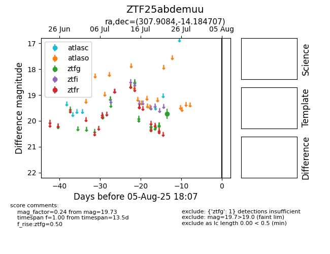

Target ZTF25abdemuu at 2025-08-05 18:07, see:
FINK: fink-portal.org/ZTF25abdemuu
Lasair: lasair-ztf.lsst.ac.uk/objects/ZTF25abdemuu
ALeRCE: alerce.online/object/ZTF25abdemuu
alt names
ZTF25abdemuu (ztf,fink)
coordinates:
equatorial (ra, dec) = (307.9084,-14.18471)
galactic (l, b) = (30.9160,-28.49381)
photometry
last ztfg=19.73
1 ztfg detections
